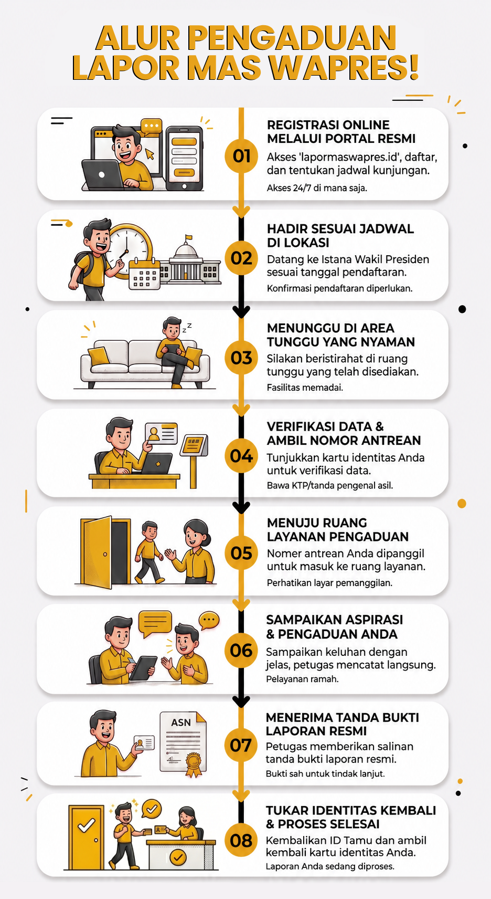

[Gambar Alur Layanan Pengaduan]
Pastikan file gambar "gambar1.jpg" berada di folder yang sama
Pelayanan program Lapor Mas Wapres! diselenggarakan di Kantor Sekretariat Wakil Presiden, Jalan Kebon Sirih No. 14, Jakarta Pusat, pada hari kerja:
© 2024 Sekretariat Wakil Presiden Republik Indonesia